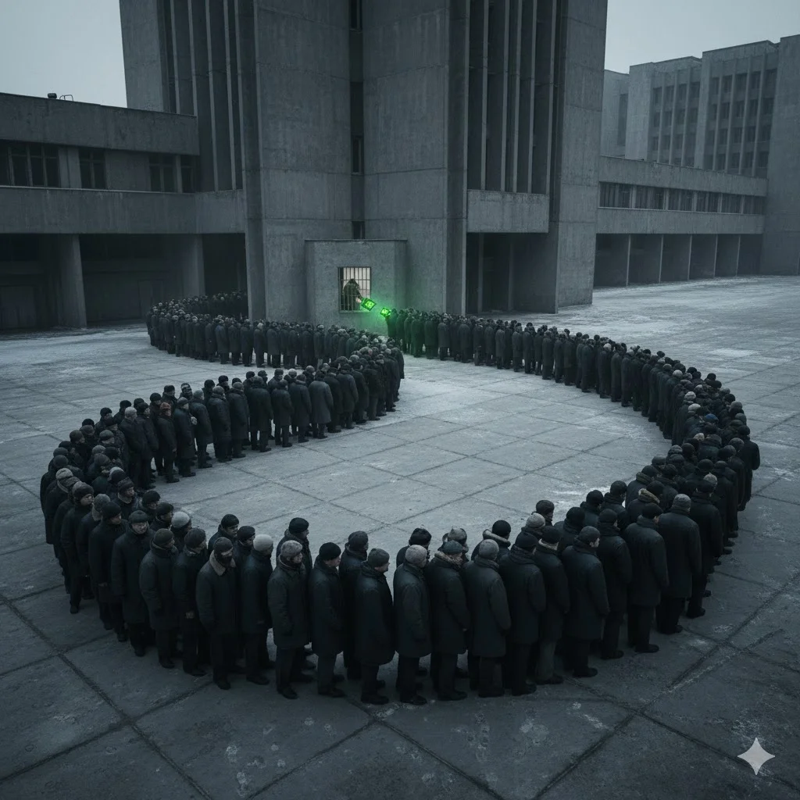

In January 2026, Nvidia invested an additional $2 billion in CoreWeave, bringing its total stake to $5.3 billion and to 11.5% of the company. The press release used the language of partnership: “deepening infrastructure, software, and platform alignment.” However, partnerships don’t typically involve the senior partner also serving as the sole supplier, the largest demand guarantor, the credit enhancer, and the first-call provider for every new chip architecture.
What Nvidia has built with CoreWeave and a growing roster of GPU cloud providers isn’t a partnership. It’s something closer to an empire. The precedent isn’t from Silicon Valley: it’s from the Soviet Union.
The Transfer Ruble Problem
In 1949, Joseph Stalin established the Council for Mutual Economic Assistance (COMECON) as the Soviet Union’s answer to the Marshall Plan. The official purpose was cooperation. The actual purpose was control. The Soviet Union supplied raw materials — oil, gas, and iron ore — to satellite states at subsidized prices. In return, the satellites manufactured goods and sold them back. Both sides booked “trade.” Both sides reported “growth.” But the growth was an artifact of a closed system.
The mechanism that made it work was the transfer ruble, COMECON’s common accounting currency. It was not convertible into anything. Poland could not use a surplus with Russia to buy goods from Hungary. As the Chicago Tribune observed in January 1990, the result was the Soviet Union sending subsidized raw materials to the satellites and receiving in return their least competitive manufactured goods — products that couldn’t be sold to anyone else.
The system generated impressive industrial statistics for four decades. But none of its economies could function outside the system that created them. When the Soviet Union withdrew support in 1989-91, the satellites did not transition to independence gracefully. They collapsed. East Germany had to be absorbed by the West at a cost of $2 trillion. Romania’s real GDP did not regain its 1989 level until the early 2000s.
The brutal lesson of COMECON: economic dependency disguised as growth is still dependency. And dependencies don’t announce their fragility until the patron withdraws.
How is this relevant to Nvidia and Neoclouds? Just look at their relationship and tell me it’s different.
The Founding of the Empire
Between 2020 and 2022, Nvidia’s four largest customers began building chips to replace GPUs. Google had TPUs, Amazon was developing Inferentia and Trainium, Microsoft had Maia, and Meta was designing MTIA. The implicit threat was existential: if the hyperscalers succeeded, Nvidia’s quasi-monopoly on the AI accelerator market would erode from the top down.
Then ChatGPT happened. Demand for Nvidia’s H100 GPUs went from robust to desperate, and Nvidia controlled the entire supply. For the first time, Jensen Huang held a weapon no chipmaker had ever possessed: the power to choose who gets the hardware.
He chose the neoclouds.
Their origin stories are instructive. CoreWeave and Crusoe Energy started as crypto operations. Lambda Labs first developed a facial recognition API before adopting deep learning workstations. Nebius emerged from the non-Russian remnants of Yandex in July 2024.
What they all shared, from Jensen’s perspective, was a crucial characteristic: none of them would ever build a competing chip. Google might develop TPU v7. Amazon might ship Trainium3. But CoreWeave, Lambda, and Crusoe would buy Nvidia GPUs until the heat death of the universe, because GPUs were their entire business model.
The allocation decisions started in 2023. CoreWeave received H100 instances before most hyperscalers and was first to deploy GB200 NVL72 racks in February 2025. According to Sacra Research, CoreWeave enjoyed “most favored nation” status for Nvidia GPU allocation, a term that carries imperial connotations.
What began as opportunistic supply steering hardened into something structural within eighteen months.
The Four Channels of Dependency
Nvidia’s control over the neoclouds operates through four channels that parallel the Soviet playbook.
Preferential allocationis the subsidized oil. During the 2023-2024 GPU shortage, receiving Nvidia’s latest chips six months before competitors was worth billions in revenue. CoreWeave built its market position on this advantage. When supply normalizes, the advantage evaporates, but the dependency remains.
Equity investmentis the bilateral trade agreement. Nvidia has poured $5.3 billion into CoreWeave, $700 million into Nebius, and undisclosed amounts into Lambda, Crusoe, and others. Nvidia participated in startup funding rounds totaling over $40 billion in 2025 alone, according to TechCrunch and AI Funding Tracker analyses. These stakes create alignment, but they also create obligation. A company whose largest shareholder is also its sole supplier doesn’t have an arm’s-length commercial relationship. It has a patron.
Credit enhancementis the non-convertible currency. Nvidia’s equity investments function as implicit guarantees that enable newer facilities to borrow at rates near SOFR (the benchmark rate for floating-rate loans) plus 4%. That’s roughly 8-10% compared to the 13-17% that private credit charges smaller operators without such backing. Based on public filing data, CoreWeave’s average debt rate sits at approximately 11%. Without Nvidia, the company would carry junk-bond pricing. Like the transfer ruble, it is not convertible; Nvidia’s endorsement is valid only within Nvidia’s ecosystem.
Demand backstopsare the implicit threat. Nvidia signed a $6.3 billion master services agreement with CoreWeave, committing to purchase unused capacity through April 2032. It structured a $1.5 billion leaseback arrangement with Lambda. The Soviet Union provided a captive market for Bulgarian agricultural goods and Czech machine tools—products insulated from real competition by nonconvertible currency and subsidized Soviet energy—for the same reason: to keep the system from unraveling.
Together, these four channels create a dependency so comprehensive that it’s invisible to participants who mistake it for a market.
The financial channels alone don’t explain the grip. There is a fifth mechanism that doesn’t appear in any filing:the cult of Jensen.
Every Nvidia keynote is a production: the leather jacket, the kitchen-table origin myth, the messianic framing of AI as civilization’s next phase. It would be easy to dismiss as CEO theater except for one detail: open any Nvidia deck, and you’ll find cartoon-like Jensens sprinkled across the slides. It’s absurd, but it is also diagnostic.
The neoclouds don’t just buy Nvidia hardware. They buy Jensen’s prophetic vision of the AI future, where compute demand grows exponentially forever, and every GPU deployed today will be worth more tomorrow than it is today. That vision makes the debt load feel like an investment rather than a source of leverage. It makes CUDA lock-in feel like ecosystem membership rather than captivity. And it makes questioning the relationship — switching to AMD, demanding better allocation terms, diversifying vendors — feel like apostasy rather than supply chain management.
The leather jacket is doing real work. And the financial structure it protects is circular.
The Circular Trade
Bloomberg identified the circularity in the Nvidia-neocloud relationship directly, describing “circular financing deals that have lifted valuations.” The arithmetic is stark. Nvidia invested $5.3 billion in CoreWeave through equity. CoreWeave used that capital (plus massive debt) to purchase an estimated 250,000 Nvidia GPUs at $30,000 each — $7.5 billion in hardware. Nvidia booked this as data center revenue. Then Nvidia signed a $6.3 billion backstop to buy cloud capacity from CoreWeave, which CoreWeave will report as its own revenue. The circle closes.
Nebius offers a smaller-scale version of the same loop: Nvidia invested $700 million, and in a single quarter, Nebius spent $2.1 billion on capex — overwhelmingly GPU purchases and data center infrastructure — against $227.7 million in revenue. The capex flows through Nvidia’s income statement as data center sales. The revenue flows back as cloud services. The money circulates.
The recycling extends beyond Nvidia’s direct investments. Microsoft spends approximately $200 million per month on GPU compute through neoclouds, per SemiAnalysis. Hyperscaler capital is cycling through satellite providers and back to Nvidia as hardware orders. Nvidia itself rents GPU clusters from CoreWeave: all of its MLPerf Training benchmark submissions run on CoreWeave’s 11,000-GPU H100 cluster. As McKinsey observed in a November 2025 report, AI chip producers “seeded these new channels, sometimes even acting as offtake customers to neoclouds.” The patron isn’t just selling to the satellites. It’s buying from them, too.
Jensen Huang called the circularity charge “ridiculous.” He has a point, but it is limited. Nvidia CFO Colette Kress has consistently disclosed that large cloud providers represent “approximately 50%” of data center revenue. Neoclouds sit in the other half, lumped with consumer internet companies, sovereign AI buyers, and enterprises. Nvidia has never broken them out, and no public analyst report does either. The number is almost certainly buried in paywalled sell-side research. But triangulating from known capex — CoreWeave’s $8.7 billion alone in CY2024, JP Morgan’s estimate of roughly $60 billion in total neocloud capex for 2025 — and assuming 50–70% of that capex flows to Nvidia GPU purchases (Jensen himself claims Nvidia captures ~70% of total data center cost), neoclouds likely represent 13–22% of Nvidia’s annual data center revenue. Even at the high end, with quarterly data center revenue hitting $51.2 billion in Q3 FY2026, the neocloud tail doesn’t wag the Nvidia dog.
However, circularity matters at the neocloud level, not at the Nvidia level. CoreWeave’s entire existence depends on the continued patronage described above. Remove any one leg and the business case deteriorates. Remove two, and it collapses. The circularity isn’t about inflating Nvidia’s revenue: it’s about making the neoclouds existentially dependent on Nvidia’s continued patronage.
The CUDA lock-in completes the trap. This isn’t purely a technology decision. It’s a loyalty test, and disloyalty would trigger the withdrawal of imperial protection. No one has tested whether Nvidia’s generosity persists after a switch to AMD. Crusoe’s reported $400 million AMD MI355X purchase is the closest thing to a test case — and it’s notable that Crusoe, with its independent energy infrastructure and $11.6 billion in project financing, has more room to experiment than most.
The Debt Arithmetic
The neocloud sector’s numbers are ugly.
CoreWeave’s Q3 2025 10-Q reported $14.2 billion in total debt as of September 30, a figure that could only have grown after Q4 drawdowns on loan facilities and the December 2025 credit agreement amendment. Interest expense tripled year over year to $311 million in Q3 alone, accounting for 23% of quarterly revenue. Off-balance-sheet lease commitments add another $34 billion through 2028. Coreweave has never been GAAP profitable, and analysts project a net loss of $1.1 billion for 2025.
But the headline numbers understate the fragility. On New Year’s Eve 2025, CoreWeave quietly amended its credit agreement to reduce the minimum liquidity requirement to $100 million for March through April 2026. A company carrying north of $14 billion in debt asked for permission to run with $100 million in cash. HSBC estimates CoreWeave faces a $9.8 billion liquidity shortfall in 2026, even after Nvidia’s $2 billion equity injection. Q3 Interest coverage — GAAP operating income of $51.9 million against $311 million in interest expense — sits at 0.17, meaning operating income covers less than a fifth of interest payments. Negative free cash flow exceeded $8 billion over the trailing twelve months. HSBC estimates that construction delays shifted $200-$300 million in Q4 revenue to Q1, leaving GPUs idle while their debt accrued interest.
Nvidia’s $2 billion January investment wasn’t a financial bet. It was an emergency subsidy to keep a satellite state solvent through the spring, the same calculus that drove the Soviet Union to extend emergency oil shipments to Poland during the 1980-81 crisis. The subsidy preserved the system’s appearance of functionality. It did not fix the economics.
Neocloud debt is collateralized by GPUs, and this is where the financial engineering gets genuinely dangerous. CoreWeave books GPU depreciation over six years. One Seeking Alpha analyst identified a 12-year server useful-life assumption buried in the filings, which is double the industry standard. Nebius uses four years. Skeptics, including Michael Burry, argue that the actual useful life is two to three years. The market price of H100 compute time has already fallen roughly 65% from its 2024 peak, from roughly $9 per GPU-hour to around $3.10, with spot rates on Vast.ai dropping below $1.50. The collateral backing billions in debt is depreciating far faster than the books acknowledge.
GPUs secured by debt that assumes a six-year useful life, generating revenue at rates that have fallen by more than half in eighteen months, with new architectures arriving annually that render prior generations obsolete. The math doesn’t work without continued exponential demand growth. The bull case is that inference demand from AI agents could deliver exactly that growth, transforming neoclouds from buffer states into specialized infrastructure serving a market too large for hyperscalers to monopolize. Whether this rescue arrives before the debt comes due is the central question of the sector.
Regarding Nebius, it reported Q4 2025 earnings on February 12, and the numbers are instructive. Revenue surged more than sixfold year-over-year to $227.7 million but missed estimates of $246.1 million. Net losses widened to $249.6 million. Capital expenditures hit $2.1 billion in the quarter, $9 in capex for every $1 of revenue collected.
According to Synergy Research Group, the neocloud sector generated approximately $23 billion in total revenue in 2025, increasing by more than 200% year over year. It carries an estimated $25 billion or more in combined debt at double-digit interest rates, collateralized by depreciating hardware, with margins compressing as prices fall. That’s not a market. It’s a leveraged bet that AI compute demand will grow faster than GPU prices decline.
CoreWeave reports on February 26. Tick tock.
The Empire’s Purpose
What’s easy to miss is that the neoclouds’ commercial viability might be beside the point. Their primary value to Jensen Huang lies not in GPU sales. It’s the negotiating leverage they provide against hyperscalers.
Consider the game theory. All major hyperscalers are developing custom silicon. JP Morgan reports that custom chips already represent 37-40% of the AI chip market. Without the neoclouds, each hyperscaler could credibly threaten Nvidia, which would face gradual encirclement with nowhere to redirect supply.
With the neoclouds, the equation changes. If Microsoft reduces its Nvidia orders, Jensen redirects those GPUs to CoreWeave, which is already renting capacity back to Microsoft anyway. The neoclouds ensure that every GPU Nvidia produces has a buyer, even if hyperscalers defect. They are not a business strategy. They are a strategic deterrent.
Is this why Nvidia continues to invest even as the economics become increasingly strained? The $2 billion January 2026 CoreWeave investment wasn’t about financial returns. It was about maintaining the deterrent. An empire doesn’t invest in buffer states for the ROI, but for strategic depth.
Jassy’s Game
Not all hyperscalers are equally threatened by the neoclouds. Microsoft is acollaborator: Azure is CoreWeave’s largest customer, and Microsoft has committed more than $33 billion to neocloud providers collectively. Satya Nadella isn’t fighting the neoclouds: he’s using them as overflow GPU capacity while keeping the enterprise relationship and the margin. He gets the compute without the capital intensity. Someone else’s balance sheet carries the risk.
Google isindifferent. With TPU v7 Ironwood in production, Gemini trained entirely on custom silicon, and a cloud business growing on the strength of its AI/ML stack rather than raw GPU rental, Google can shrug off the neocloud question entirely. Custom silicon made it irrelevant.
Amazon is the one with the target on its back. AWS holds 30% of the global cloud infrastructure market, the largest share, and the most to defend. Every GPU-hour CoreWeave sells to an AI lab is one AWS doesn’t, and AWS gets no strategic benefit from neoclouds.
In the first week of February 2026, Amazon, Alphabet, Microsoft, and Meta collectively guided to roughly $650 billion in 2026 capex, per Bloomberg. I examined the full capex picture and its historical parallels inThe $3 Trillion Bet.
The number that matters is Amazon’s $200 billion, a substantial portion of which will enrich the very company whose neocloud empire threatens AWS’s market position. That looks like surrender. Unless Jassy’s long game is not to attack Nvidia, but to kill the neoclouds.
Step one: flood the zone. Spend $200 billion to build so much capacity on AWS that enterprise customers have no reason to rent from CoreWeave and others. AWS already has the sales force and the enterprise relationships. In June 2025, it cut H100 pricing by up to 45%, clear market-share warfare against neocloud pricing. The only advantage neoclouds ever had was early GPU access. Fix that with money.
Step two: as AWS absorbs GPU workloads back in-house, neocloud utilization drops. Revenue misses. Debt becomes unserviceable. CoreWeave’s refinancing wall becomes a crisis. The weaker players fold or sell at distressed valuations.
Step three: with the buffer gone, Jassy restores negotiating leverage. He doesn’t need Trainium to beat Nvidia. He needs it to be good enough that the threat of migration is credible. Anthropic training Claude on 500,000 Trainium2 chips in AWS’s Project Rainier cluster is a proof point, not a slide deck. “Give us better pricing, or we shift 30% of inference to Trainium” becomes a conversation Jensen can no longer deflect. Remove neoclouds from the board, and the Emperor is naked.
The Cold War parallel sharpens. This is the Reagan defense buildup: outspend the Evil Empire until maintaining the satellites becomes economically irrational. Amazon’s $200 billion — roughly eight times the neocloud sector’s 2025 revenue — serves exactly that function. It’s not competition, it’s extinction-level spending. CoreWeave dropped 20% in the days following AWS’ announcement, and only stabilized after Jensen Huang went on CNBC to personally call the spending ‘appropriate and sustainable’.
Jensen’s $2 billion January investment may be his attempt to keep the buffer viable until the inference demand explosion gives neoclouds a genuine commercial rationale for existence. If it arrives fast enough, the neoclouds survive. If it doesn’t, and Jassy’s capex flood kills them before inference saves them, Jensen loses his deterrent and faces the world’s largest cloud provider armed with Trainium and no buffer between them.
It’s a race between Amazon’s spending and the AI demand curve. Place your bets.
Dissolution or Commercialization
The bear case writes itself. GPU supply normalizes as Nvidia ramps production and TSMC expands capacity. Custom silicon matures: Google’s seventh-generation TPUs and Amazon’s Trainium3 absorb training workloads currently running on Nvidia hardware. Open-weight model efficiency improves and demonstrates frontier-quality results from dramatically less compute. Pricing compression continues. In this scenario, the neoclouds’ infrastructure is optimized for a scarcity that no longer exists, financed by debt that assumed pricing power the market has already taken away. The weaker players get absorbed. The stronger ones change patrons.
On June 28, 1991, COMECON dissolved in Budapest. The satellites didn’t become independent. They exchanged dependency on Moscow for dependency on the European Community.
But there is a genuine counter-argument, and it doesn’t depend on faith.
Training by a handful of frontier labs drives the most concentrated GPU purchases, but inference workloads — which scale with users, not model size — are already approaching half of Nvidia's data center revenue and growing faster. If AI agents proliferate, inference compute demand could dwarf training by 2028. Neoclouds, with bare-metal performance advantages of up to 20% higher compute efficiency according to CoreWeave’s own benchmarks, are well positioned for latency-sensitive inference workloads that hyperscalers’ general-purpose platforms handle less efficiently. In that world, CoreWeave and Nebius aren’t buffer states. They’re specialized infrastructure serving a market too large and too performance-sensitive for three hyperscalers to monopolize.
The backlog supports this reading. CoreWeave’s $55.6 billion in contracted revenue as of Q3 2025 isn’t fictional. OpenAI’s $22.4 billion commitment, Meta’s $14.2 billion deal, Microsoft’s multi-billion-dollar capacity agreements, and Nvidia’s $6.3 billion backstop reflect genuine demand that internal hyperscaler capacity cannot yet satisfy. CoreWeave’s customer concentration has improved dramatically, with no single customer representing more than 35% of backlog, down from 85% at the start of 2025. Nebius is building a full-stack cloud platform across nine data centers in four countries, not just a GPU rental service. Its full-year 2026 revenue guidance of $3-3.4 billion would represent roughly 6x its 2025 revenue, with annual recurring revenue reaching $7-9 billion by year-end.
And Nvidia is not the declining Soviet Union. Jensen Huang leads a company with gross margins above 75%, $51.2 billion in quarterly data center revenue, and a product roadmap—Blackwell, Rubin, Vera—that maintains architectural leadership for at least three more generations. If the patron is strong enough and the market grows fast enough, the empire doesn’t need to dissolve. It needs to sell.
The multi-billion-dollar question isn’t whether Jensen Huang built an empire. He clearly did. The question is whether the empire generates enough genuine economic value to survive the transition from strategic dependence to commercial independence.
Every empire faces this test eventually. The ones that pass it become trading partners. The ones that fail become case studies. COMECON became a case study.
Julien
References
Nvidia press release,“Nvidia and CoreWeave Strengthen Collaboration to Accelerate Buildout of AI Factories,”January 26, 2026.
CNBC,“CoreWeave gets another $2 billion from Nvidia as AI data center demand booms,”January 26, 2026.
Axios,“Nvidia invests $2 billion more in CoreWeave,”January 26, 2026.
Yahoo Finance,“Nvidia’s $24B AI deal blitz has Wall Street asking questions about murky circular investments,”Bloomberg, 2025.
CNBC,“Nvidia’s investment portfolio: A look at its top startup investments,”September 26, 2025.
TechCrunch,“Nvidia’s AI empire: A look at its top startup investments,”January 2, 2026.
CoreWeave SEC filing, DDTL 3.0 Credit Agreement Amendment, December 31, 2025. Reported byInvesting.com,StreetInsider, andTechStock.
HSBC, CoreWeave (CRWV) price target cut to $41. Reported byInvesting.comandInsider Monkey.
Yahoo Finance,“Amazon sees much higher than expected 2026 capex of $200 billion,”February 5, 2026.
CNBC,“Why Amazon’s CEO is confident with $200 billion spending plan,”February 5, 2026.
Yahoo Finance,“Big Tech’s spending drove Nvidia’s rise,”Bloomberg, 2025.
Yahoo Finance,“A single customer made up 19% of Nvidia’s revenue,”Bloomberg, 2025.
Benzinga,“Nvidia’s top customer may be Microsoft, accounting for a fifth of its revenue,”2024.
Data Center Dynamics,“AWS cuts costs for H100, H200, and A100 instances by up to 45%,”June 2025.
JPMorgan, custom AI chip market share estimates (37% in 2024, 40% in 2025). Reported byTechBlog ComSoc.
Nebius Group Q4 2025 earnings, February 12, 2026: revenue $227.7M, net loss $249.6M, capex $2.1B.
Motley Fool,“Nvidia is investing $2 billion more into CoreWeave,”February 6, 2026.
Motley Fool,“Who are Nvidia’s biggest customers?”June 26, 2025.
Benzinga,“Amazon, Google, and others are pouring $700 billion into AI capex,”February 2026.
Introl,“AWS Trainium & Inferentia Silicon Ecosystem Guide 2025,”2025.
Invezz,“Why CoreWeave stock backed by Nvidia could explode in 2026,”February 2, 2026.
TechCrunch,“Nvidia invests $2B to help debt-ridden CoreWeave add 5GW of AI compute,”January 26, 2026.
Cloud GPU pricing data fromIntuition Labs,Hyperbolic, andMedium/CLI.
Platformonomics,“Follow the capex: Triangulating Nvidia,”February 2024.
Global Venturing,“Nvidia backs 22 companies in September investment spree,”September 2025.
Data Center Dynamics,“Nvidia signs $1.5bn deal to lease its GPUs back from Lambda,”September 2025.
CoreWeave Q3 2025 earnings press release,“CoreWeave Reports Strong Third Quarter 2025 Results,”November 10, 2025. Revenue backlog of $55.6 billion; customer concentration data.
Bloomberg,“CoreWeave Expands OpenAI Deals to as Much as $22.4 Billion,”September 25, 2025.
CNBC,“CoreWeave stock closes up 12% after company lands $14 billion deal with Meta,”September 30, 2025.
CoreWeave SEC filing,“CoreWeave and NVIDIA Master Services Agreement,”September 9, 2025. $6.3 billion backstop for unsold capacity through April 2032.
Amazon Web Services,“AWS activates Project Rainier,”October 29, 2025. Nearly 500,000 Trainium2 chips; Anthropic using cluster for Claude.
Seeking Alpha,“CoreWeave Stock: An Extraordinary 12-Year Server Useful Life Assumption,”2025.
Tom’s Hardware,“Microsoft inks $33 billion in deals with neoclouds like Nebius, CoreWeave,”2025.
NVIDIA Newsroom,“NVIDIA Announces Financial Results for Third Quarter Fiscal 2026,”November 2025. Data center revenue $51.2 billion.
Nvidia FY2025 earnings call, February 26, 2025. CFO Colette Kress disclosed large cloud service providers represent “approximately 50%” of data center revenue across Q2, Q3, and Q4 FY2025.
Synergy Research Group, neocloud market revenue estimates, October 2025. Projected $23 billion in total neocloud revenue for calendar 2025 with 205% year-over-year growth; $180 billion projected by 2030.
JP Morgan, neocloud capital expenditure estimates, 2025. Cited by Syz Group, November 2025: approximately $60 billion in total neocloud capex for 2025.
CoreWeave S-1 filing, SEC, 2025. CY2024 capital expenditures of $8.7 billion against $1.9 billion in revenue; 100% Nvidia GPU sourcing.
McKinsey & Company, neocloud market analysis, November 2025. Noted AI chip producers “seeded these new channels, sometimes even acting as offtake customers to neoclouds.”
SemiAnalysis, neocloud economics analysis, 2025. Estimated Microsoft spends approximately $200 million per month on GPU compute through neoclouds; Nvidia MLPerf Training benchmarks run on CoreWeave’s 11,000-GPU H100 cluster.
CoreWeave,“CoreWeave Closes $2.6 Billion Secured Debt Financing Facility,”July 31, 2025. DDTL 3.0 Facility at SOFR +4%.
Data Center Dynamics,“Chipping away at the economics of neoclouds,”2025. Private credit for smaller GPU infrastructure operators at 13-17%.
CNBC,“The question everyone in AI is asking: How long before a GPU depreciates?”November 14, 2025. Michael Burry argues actual GPU useful life is two to three years; estimates hyperscalers will understate depreciation by $176 billion cumulative through 2028.
CoreWeave,“Purpose-Built Cloud for AI at Scale: Achieving 20% Higher MFU,”August 2025. Benchmark whitepaper reporting up to 20% higher model FLOPS utilization versus alternative cloud solutions.